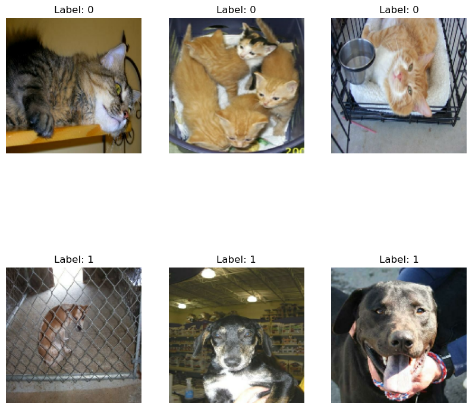
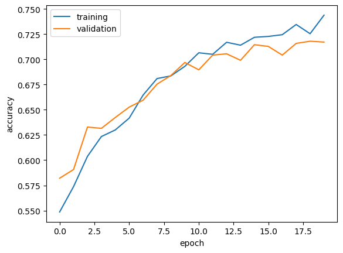
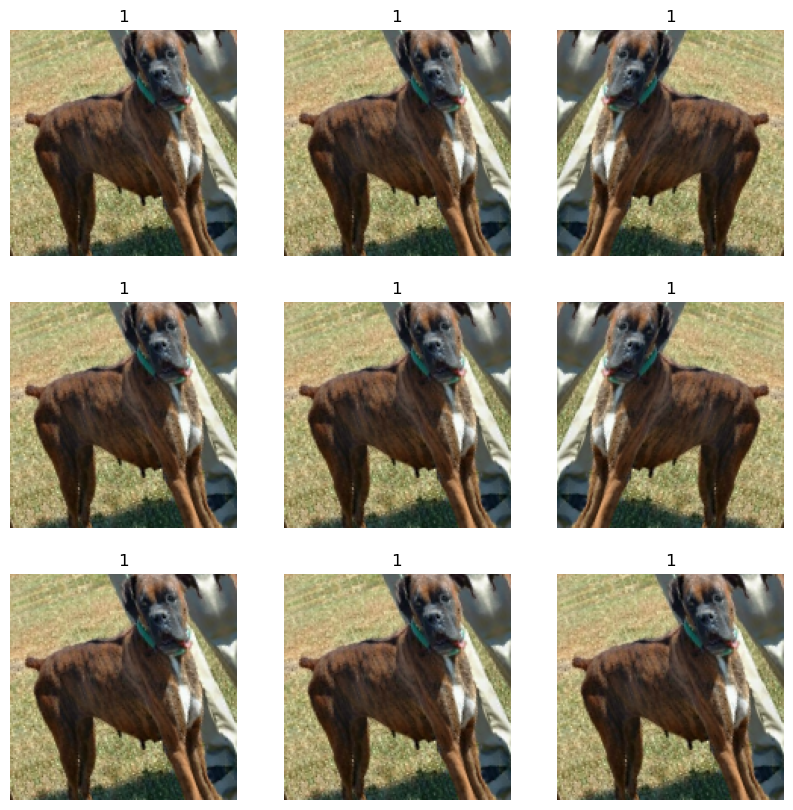
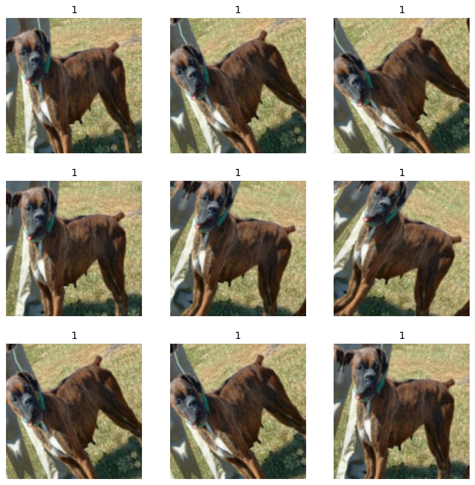
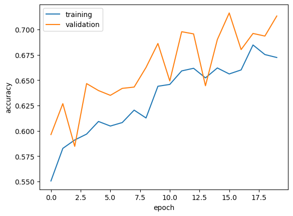
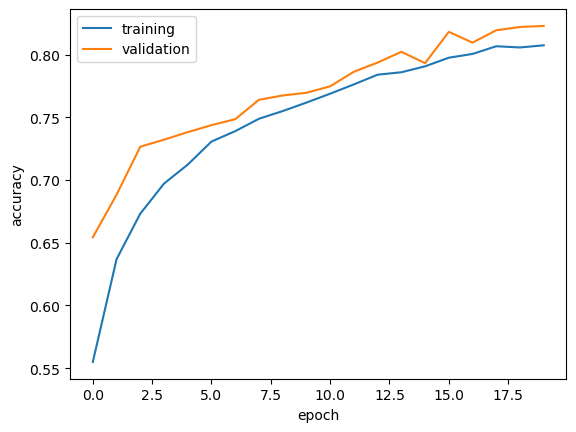
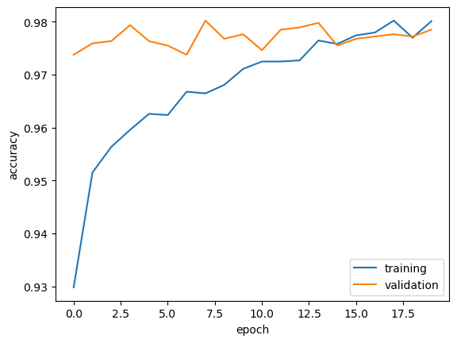

import numpy as np
import keras
from keras import layers
import tensorflow as tf
import matplotlib.pyplot as plt
import tensorflow_datasets as tfds
from keras import datasets, layers, models
import tensorflow as tf
import tensorflowImage classification in Keras with data fed through Tensorflow Datasets.
We will teach a machine learning algorithm to distinguish between pictures of dogs and pictures of cats.
Import and Load Packages and Obtain Data
train_ds, validation_ds, test_ds = tfds.load(
"cats_vs_dogs",
# 40% for training, 10% for validation, and 10% for test (the rest unused)
split=["train[:40%]", "train[40%:50%]", "train[50%:60%]"],
as_supervised=True, # Include labels
)
print(f"Number of training samples: {train_ds.cardinality()}") # 40% for training
print(f"Number of validation samples: {validation_ds.cardinality()}") # 10% for validation
print(f"Number of test samples: {test_ds.cardinality()}") #10% for test Number of training samples: 9305
Number of validation samples: 2326
Number of test samples: 2326Resizing Images to a fixed size of 150x150
Let’s make all the images a consistent size
resize_fn = keras.layers.Resizing(150, 150)
train_ds = train_ds.map(lambda x, y: (resize_fn(x), y))
validation_ds = validation_ds.map(lambda x, y: (resize_fn(x), y))
test_ds = test_ds.map(lambda x, y: (resize_fn(x), y))Rapidly reading data
The batch_size of 64 means we’re getting 64 data points that are gathered from the directory at once.
from tensorflow import data as tf_data
batch_size = 64
train_ds = train_ds.batch(batch_size).prefetch(tf_data.AUTOTUNE).cache()
validation_ds = validation_ds.batch(batch_size).prefetch(tf_data.AUTOTUNE).cache()
test_ds = test_ds.batch(batch_size).prefetch(tf_data.AUTOTUNE).cache()Function to create a two-row visualization
We want our function to show three random pictures of cats in the first row, and in the second row, show three random pictures of dogs.
import matplotlib.pyplot as plt
for images, labels in train_ds.take(1): # retrieve one batch (32 images with labels) from the training data
plt.figure(figsize=(10, 10))
trueCount = 0 #number of images produced and plotted
count = 0 #iterator going through images to see if it meets requirements for three cats on first row and three dogs on second row
while trueCount < 6: # we only want 6 images
ax = plt.subplot(2, 3, trueCount + 1) # two rows and six columns
if trueCount < 3 and labels[count].numpy() == 0 or (trueCount >= 3 and labels[count].numpy() == 1): #show three random pictures of cats in the first row, and in the second row, show three random pictures of dogs.
plt.title(f"Label: {labels[count].numpy()}") #label 0 is for cat, 1 is for dog
plt.imshow(images[count].numpy().astype("int32")) #show image
plt.axis("off")
trueCount += 1 #if image is shown, increment trueCount by 1
count += 1 #after each picture is checked, increment count by 1
plt.show()2025-03-06 12:39:28.819171: W tensorflow/core/kernels/data/cache_dataset_ops.cc:916] The calling iterator did not fully read the dataset being cached. In order to avoid unexpected truncation of the dataset, the partially cached contents of the dataset will be discarded. This can happen if you have an input pipeline similar to `dataset.cache().take(k).repeat()`. You should use `dataset.take(k).cache().repeat()` instead.
Compute the number of images in the training data with label 0 (“cat”) and label 1 (“dog”).
Iterate through the train_ds and count the number of cats and dogs. We first initialize the nCat and nDog to 0. Then we go through the labels within the labels_iterator and depending on whether it matches a cat or a dog, the counter for the respective pet goes up.
Let’s calculate baseline machine learning model
This model that always guesses the most frequent label is the baseline machine learning model. We can calculate this by getting the max between nCat and nDog and dividing that number over the sum of those two variables. We obtain a baseline accuracy of 50%, which means that if we obtain an image and try to randomly guess whether it’s a cat or a dog, there’s a 50% chance we’re correct.
labels_iterator= train_ds.unbatch().map(lambda image, label: label).as_numpy_iterator()
nCat = 0 #tracks number of cats
nDog = 0#tracks number of dogs
i = 0
for label in labels_iterator:
if int(label) == 0: #image is cat
nCat += 1
else:
nDog += 1
print('number of cats', nCat)
print('number of dogs',nDog)
baselineAccuracy = max(nCat, nDog)/(nCat + nDog) # baseline machine learning model guesses the most frequent label
print('baseline accuracy',baselineAccuracy)
number of cats 4637
number of dogs 4668
baseline accuracy 0.5016657710908113First Model
To create our first model, we are making a keras.Sequential model and we are aiming to include at least two Conv2D layers, at least two MaxPooling2D layers, at least one Flatten layer, at least one Dense layer, and at least one Dropout layer. We’re naming this model model1. The optimizer we’re using is Adam and the loss function is binary_crossentropy. The history variable helps us train for 20 epochs.
import tensorflow as tf
from tensorflow.keras import layers, models
import matplotlib.pyplot as plt
model1 = keras.Sequential([
layers.Conv2D(16, (3,3), activation='relu', input_shape=(150, 150, 3)), # “slides” over the 2D input data doing elementwise multiplication -> sum up the results into a single output pixel
layers.MaxPooling2D(2,2), #Downsamples the input by taking the maximum value over an input window for each channel of the input
layers.Conv2D(16, (3,3), activation='relu'), # “slides” over the 2D input data doing elementwise multiplication -> sum up the results into a single output pixel
layers.MaxPooling2D(2,2), #Downsamples the input by taking the maximum value over an input window for each channel of the input
layers.Flatten(), # transform multi-dimensional input data into a one-dimensional
layers.Dense(64, activation='relu'), #connects every neuron in a layer to every neuron in the previous layer
layers.Dropout(0.3),#prevent overfitting
layers.Dense(1, activation='sigmoid') #connects every neuron in a layer to every neuron in the previous layer
])
model1.summary()
model1.compile(optimizer='adam',
loss='binary_crossentropy', #good for classifying between 2 options
metrics=['accuracy'])
history = model1.fit(train_ds,
epochs=20, #20 epochs
validation_data=validation_ds)
Model: "sequential_13"
┏━━━━━━━━━━━━━━━━━━━━━━━━━━━━━━━━━┳━━━━━━━━━━━━━━━━━━━━━━━━┳━━━━━━━━━━━━━━━┓ ┃ Layer (type) ┃ Output Shape ┃ Param # ┃ ┡━━━━━━━━━━━━━━━━━━━━━━━━━━━━━━━━━╇━━━━━━━━━━━━━━━━━━━━━━━━╇━━━━━━━━━━━━━━━┩ │ conv2d_28 (Conv2D) │ (None, 148, 148, 16) │ 448 │ ├─────────────────────────────────┼────────────────────────┼───────────────┤ │ max_pooling2d_28 (MaxPooling2D) │ (None, 74, 74, 16) │ 0 │ ├─────────────────────────────────┼────────────────────────┼───────────────┤ │ conv2d_29 (Conv2D) │ (None, 72, 72, 16) │ 2,320 │ ├─────────────────────────────────┼────────────────────────┼───────────────┤ │ max_pooling2d_29 (MaxPooling2D) │ (None, 36, 36, 16) │ 0 │ ├─────────────────────────────────┼────────────────────────┼───────────────┤ │ flatten_11 (Flatten) │ (None, 20736) │ 0 │ ├─────────────────────────────────┼────────────────────────┼───────────────┤ │ dense_26 (Dense) │ (None, 64) │ 1,327,168 │ ├─────────────────────────────────┼────────────────────────┼───────────────┤ │ dropout_14 (Dropout) │ (None, 64) │ 0 │ ├─────────────────────────────────┼────────────────────────┼───────────────┤ │ dense_27 (Dense) │ (None, 1) │ 65 │ └─────────────────────────────────┴────────────────────────┴───────────────┘
Total params: 1,330,001 (5.07 MB)
Trainable params: 1,330,001 (5.07 MB)
Non-trainable params: 0 (0.00 B)
Epoch 1/20
146/146 ━━━━━━━━━━━━━━━━━━━━ 42s 286ms/step - accuracy: 0.5312 - loss: 16.2845 - val_accuracy: 0.5821 - val_loss: 0.6810
Epoch 2/20
146/146 ━━━━━━━━━━━━━━━━━━━━ 40s 276ms/step - accuracy: 0.5610 - loss: 0.6898 - val_accuracy: 0.5907 - val_loss: 0.6729
Epoch 3/20
146/146 ━━━━━━━━━━━━━━━━━━━━ 40s 272ms/step - accuracy: 0.5942 - loss: 0.6721 - val_accuracy: 0.6328 - val_loss: 0.6421
Epoch 4/20
146/146 ━━━━━━━━━━━━━━━━━━━━ 43s 296ms/step - accuracy: 0.6144 - loss: 0.6570 - val_accuracy: 0.6316 - val_loss: 0.6509
Epoch 5/20
146/146 ━━━━━━━━━━━━━━━━━━━━ 40s 274ms/step - accuracy: 0.6250 - loss: 0.6610 - val_accuracy: 0.6423 - val_loss: 0.6427
Epoch 6/20
146/146 ━━━━━━━━━━━━━━━━━━━━ 37s 256ms/step - accuracy: 0.6365 - loss: 0.6433 - val_accuracy: 0.6526 - val_loss: 0.6341
Epoch 7/20
146/146 ━━━━━━━━━━━━━━━━━━━━ 38s 258ms/step - accuracy: 0.6535 - loss: 0.6249 - val_accuracy: 0.6595 - val_loss: 0.6211
Epoch 8/20
146/146 ━━━━━━━━━━━━━━━━━━━━ 38s 259ms/step - accuracy: 0.6820 - loss: 0.6035 - val_accuracy: 0.6754 - val_loss: 0.6117
Epoch 9/20
146/146 ━━━━━━━━━━━━━━━━━━━━ 37s 255ms/step - accuracy: 0.6816 - loss: 0.6010 - val_accuracy: 0.6840 - val_loss: 0.6055
Epoch 10/20
146/146 ━━━━━━━━━━━━━━━━━━━━ 37s 257ms/step - accuracy: 0.6948 - loss: 0.5855 - val_accuracy: 0.6969 - val_loss: 0.5990
Epoch 11/20
146/146 ━━━━━━━━━━━━━━━━━━━━ 40s 272ms/step - accuracy: 0.7071 - loss: 0.5748 - val_accuracy: 0.6896 - val_loss: 0.5984
Epoch 12/20
146/146 ━━━━━━━━━━━━━━━━━━━━ 38s 261ms/step - accuracy: 0.7039 - loss: 0.5765 - val_accuracy: 0.7042 - val_loss: 0.6004
Epoch 13/20
146/146 ━━━━━━━━━━━━━━━━━━━━ 38s 261ms/step - accuracy: 0.7149 - loss: 0.5738 - val_accuracy: 0.7055 - val_loss: 0.5859
Epoch 14/20
146/146 ━━━━━━━━━━━━━━━━━━━━ 39s 269ms/step - accuracy: 0.7109 - loss: 0.5603 - val_accuracy: 0.6991 - val_loss: 0.5922
Epoch 15/20
146/146 ━━━━━━━━━━━━━━━━━━━━ 38s 263ms/step - accuracy: 0.7173 - loss: 0.5481 - val_accuracy: 0.7145 - val_loss: 0.5861
Epoch 16/20
146/146 ━━━━━━━━━━━━━━━━━━━━ 38s 260ms/step - accuracy: 0.7236 - loss: 0.5482 - val_accuracy: 0.7128 - val_loss: 0.5791
Epoch 17/20
146/146 ━━━━━━━━━━━━━━━━━━━━ 39s 263ms/step - accuracy: 0.7164 - loss: 0.5479 - val_accuracy: 0.7042 - val_loss: 0.5882
Epoch 18/20
146/146 ━━━━━━━━━━━━━━━━━━━━ 38s 258ms/step - accuracy: 0.7403 - loss: 0.5255 - val_accuracy: 0.7158 - val_loss: 0.5709
Epoch 19/20
146/146 ━━━━━━━━━━━━━━━━━━━━ 38s 258ms/step - accuracy: 0.7315 - loss: 0.5405 - val_accuracy: 0.7180 - val_loss: 0.5752
Epoch 20/20
146/146 ━━━━━━━━━━━━━━━━━━━━ 39s 264ms/step - accuracy: 0.7529 - loss: 0.5108 - val_accuracy: 0.7171 - val_loss: 0.5670plt.plot(history.history["accuracy"], label = "training")
plt.plot(history.history["val_accuracy"], label = "validation")
plt.gca().set(xlabel = "epoch", ylabel = "accuracy")
plt.legend()
Analysis of First Model
To briefly describe a few of the things I tried, I changed the parameter numbers inside layers.Conv2D(16, (3,3), activation='relu', input_shape=(150, 150, 3)), by trying 64 or 32 instead of 16- I just out that 16 worked the best. I also adjusted the Dropout(0.3) by trying 0.5 and 0.2. I also tried different numbers instead of 64 for layers.Dense(64, activation='relu'),. Overall, through trial and error, I was able to come up with a model that achieved more than 55% accuracy.
The accuracy of my model stabilized between 70% and 75% during training. Compared to the baseline fo 50%, the first model performed a lot better. There seems to be potential overfitting because this occurs when the training accuracy is much higher than the validation accuracy, but this isn’t the case except towards the end.
Model with Data Augmentation
Let’s create a keras.layers.RandomFlip() and keras.layers.RandomRotation() layer.
Let’s also show the original image and a few copies to which RandomFlip() has been applied.
flip_layers = [
layers.RandomFlip("horizontal"),
]
def data_augmentation(x):
for layer in flip_layers:
x = layer(x)
return x
train_ds = train_ds.map(lambda x, y: (data_augmentation(x), y))
for images, labels in train_ds.take(1):
plt.figure(figsize=(10, 10))# medium size
first_image = images[0] #get first image
for i in range(9): #9 images
ax = plt.subplot(3, 3, i + 1)
augmented_image = data_augmentation(np.expand_dims(first_image, 0)) #augment it
plt.imshow(np.array(augmented_image[0]).astype("int32")) #show augmented image
plt.title(int(labels[0])) #add label
plt.axis("off")
Let’s try with random rotation this time. Here, we’ll show the original image and a few copies to which RandomRotation() has been applied.
rotate_layers = [
layers.RandomRotation(0.1),
]
def data_augmentation(x):
for layer in rotate_layers:
x = layer(x)
return x
train_ds = train_ds.map(lambda x, y: (data_augmentation(x), y))
for images, labels in train_ds.take(1):
plt.figure(figsize=(10, 10))# medium size
first_image = images[0] #get first image
for i in range(9): #9 images
ax = plt.subplot(3, 3, i + 1)
augmented_image = data_augmentation(np.expand_dims(first_image, 0)) #augment it
plt.imshow(np.array(augmented_image[0]).astype("int32")) #show augmented image
plt.title(int(labels[0])) #add label
plt.axis("off")
Model with Data Augmentation
To create our model with data augmentation, we use a model very identical to model1 but with some small adjustments and we add two new layers to this model at the very top called layers.RandomFlip("horizontal") and layers.RandomRotation(0.2). By including transformed versions of the image in our training process, we can help our model learn invariant features of our input images.
from tensorflow import keras
from tensorflow.keras import layers
model2 = keras.Sequential([
layers.RandomFlip("horizontal"), #randomly flips the images
layers.RandomRotation(0.2), #randomly rotates the images
layers.Conv2D(32, (3,3), activation='relu', input_shape=(150, 150, 3)),# “slides” over the 2D input data doing elementwise multiplication -> sum up the results into a single output pixel
layers.MaxPooling2D(2,2),#Downsamples the input by taking the maximum value over an input window for each channel of the input
layers.Conv2D(64, (3,3), activation='relu'),# “slides” over the 2D input data doing elementwise multiplication -> sum up the results into a single output pixel
layers.MaxPooling2D(2,2),#Downsamples the input by taking the maximum value over an input window for each channel of the input
layers.Flatten(), #connects every neuron in a layer to every neuron in the previous layer
layers.Dense(64, activation='relu'), #connects every neuron in a layer to every neuron in the previous layer
layers.Dropout(0.3),#prevent overfitting
layers.Dense(1, activation='sigmoid') #connects every neuron in a layer to every neuron in the previous layer
])
model2.summary()
model2.compile(optimizer="adam", loss="binary_crossentropy", metrics=['accuracy'])
history = model2.fit(train_ds, epochs=20, validation_data=validation_ds)
Model: "sequential_23"
┏━━━━━━━━━━━━━━━━━━━━━━━━━━━━━━━━━┳━━━━━━━━━━━━━━━━━━━━━━━━┳━━━━━━━━━━━━━━━┓ ┃ Layer (type) ┃ Output Shape ┃ Param # ┃ ┡━━━━━━━━━━━━━━━━━━━━━━━━━━━━━━━━━╇━━━━━━━━━━━━━━━━━━━━━━━━╇━━━━━━━━━━━━━━━┩ │ random_flip_32 (RandomFlip) │ ? │ 0 (unbuilt) │ ├─────────────────────────────────┼────────────────────────┼───────────────┤ │ random_rotation_49 │ ? │ 0 (unbuilt) │ │ (RandomRotation) │ │ │ ├─────────────────────────────────┼────────────────────────┼───────────────┤ │ conv2d_37 (Conv2D) │ ? │ 0 (unbuilt) │ ├─────────────────────────────────┼────────────────────────┼───────────────┤ │ max_pooling2d_37 (MaxPooling2D) │ ? │ 0 │ ├─────────────────────────────────┼────────────────────────┼───────────────┤ │ conv2d_38 (Conv2D) │ ? │ 0 (unbuilt) │ ├─────────────────────────────────┼────────────────────────┼───────────────┤ │ max_pooling2d_38 (MaxPooling2D) │ ? │ 0 │ ├─────────────────────────────────┼────────────────────────┼───────────────┤ │ flatten_8 (Flatten) │ ? │ 0 (unbuilt) │ ├─────────────────────────────────┼────────────────────────┼───────────────┤ │ dense_46 (Dense) │ ? │ 0 (unbuilt) │ ├─────────────────────────────────┼────────────────────────┼───────────────┤ │ dropout_32 (Dropout) │ ? │ 0 │ ├─────────────────────────────────┼────────────────────────┼───────────────┤ │ dense_47 (Dense) │ ? │ 0 (unbuilt) │ └─────────────────────────────────┴────────────────────────┴───────────────┘
Total params: 0 (0.00 B)
Trainable params: 0 (0.00 B)
Non-trainable params: 0 (0.00 B)
Epoch 1/20
146/146 ━━━━━━━━━━━━━━━━━━━━ 47s 316ms/step - accuracy: 0.5326 - loss: 31.5291 - val_accuracy: 0.5963 - val_loss: 0.6600
Epoch 2/20
146/146 ━━━━━━━━━━━━━━━━━━━━ 46s 313ms/step - accuracy: 0.5831 - loss: 0.6700 - val_accuracy: 0.6268 - val_loss: 0.6562
Epoch 3/20
146/146 ━━━━━━━━━━━━━━━━━━━━ 46s 313ms/step - accuracy: 0.5938 - loss: 0.6708 - val_accuracy: 0.5847 - val_loss: 0.6539
Epoch 4/20
146/146 ━━━━━━━━━━━━━━━━━━━━ 45s 308ms/step - accuracy: 0.5983 - loss: 0.6632 - val_accuracy: 0.6466 - val_loss: 0.6470
Epoch 5/20
146/146 ━━━━━━━━━━━━━━━━━━━━ 45s 309ms/step - accuracy: 0.6036 - loss: 0.6626 - val_accuracy: 0.6397 - val_loss: 0.6529
Epoch 6/20
146/146 ━━━━━━━━━━━━━━━━━━━━ 45s 310ms/step - accuracy: 0.6201 - loss: 0.6574 - val_accuracy: 0.6350 - val_loss: 0.6347
Epoch 7/20
146/146 ━━━━━━━━━━━━━━━━━━━━ 46s 312ms/step - accuracy: 0.6091 - loss: 0.6535 - val_accuracy: 0.6419 - val_loss: 0.6299
Epoch 8/20
146/146 ━━━━━━━━━━━━━━━━━━━━ 43s 291ms/step - accuracy: 0.6293 - loss: 0.6447 - val_accuracy: 0.6432 - val_loss: 0.6370
Epoch 9/20
146/146 ━━━━━━━━━━━━━━━━━━━━ 44s 300ms/step - accuracy: 0.6083 - loss: 0.6585 - val_accuracy: 0.6625 - val_loss: 0.6319
Epoch 10/20
146/146 ━━━━━━━━━━━━━━━━━━━━ 44s 301ms/step - accuracy: 0.6387 - loss: 0.6295 - val_accuracy: 0.6862 - val_loss: 0.6109
Epoch 11/20
146/146 ━━━━━━━━━━━━━━━━━━━━ 43s 297ms/step - accuracy: 0.6603 - loss: 0.6228 - val_accuracy: 0.6492 - val_loss: 0.6353
Epoch 12/20
146/146 ━━━━━━━━━━━━━━━━━━━━ 44s 301ms/step - accuracy: 0.6504 - loss: 0.6308 - val_accuracy: 0.6978 - val_loss: 0.5864
Epoch 13/20
146/146 ━━━━━━━━━━━━━━━━━━━━ 45s 311ms/step - accuracy: 0.6610 - loss: 0.6130 - val_accuracy: 0.6956 - val_loss: 0.5818
Epoch 14/20
146/146 ━━━━━━━━━━━━━━━━━━━━ 48s 326ms/step - accuracy: 0.6625 - loss: 0.6174 - val_accuracy: 0.6445 - val_loss: 0.6302
Epoch 15/20
146/146 ━━━━━━━━━━━━━━━━━━━━ 44s 302ms/step - accuracy: 0.6460 - loss: 0.6306 - val_accuracy: 0.6900 - val_loss: 0.5833
Epoch 16/20
146/146 ━━━━━━━━━━━━━━━━━━━━ 46s 314ms/step - accuracy: 0.6608 - loss: 0.6203 - val_accuracy: 0.7163 - val_loss: 0.5764
Epoch 17/20
146/146 ━━━━━━━━━━━━━━━━━━━━ 46s 314ms/step - accuracy: 0.6680 - loss: 0.6113 - val_accuracy: 0.6801 - val_loss: 0.6006
Epoch 18/20
146/146 ━━━━━━━━━━━━━━━━━━━━ 43s 293ms/step - accuracy: 0.6729 - loss: 0.6103 - val_accuracy: 0.6960 - val_loss: 0.5767
Epoch 19/20
146/146 ━━━━━━━━━━━━━━━━━━━━ 45s 307ms/step - accuracy: 0.6792 - loss: 0.6109 - val_accuracy: 0.6935 - val_loss: 0.5899
Epoch 20/20
146/146 ━━━━━━━━━━━━━━━━━━━━ 515s 4s/step - accuracy: 0.6608 - loss: 0.6150 - val_accuracy: 0.7132 - val_loss: 0.5672plt.plot(history.history["accuracy"], label = "training")
plt.plot(history.history["val_accuracy"], label = "validation")
plt.gca().set(xlabel = "epoch", ylabel = "accuracy")
plt.legend()
Analysis
We were able to get at least 60% validation accuracy. This is high. During training, the validation accuracy started at 53% and was able to gradually climb to be over 65%.
Compared to model1 validation’s accuracy of 70%, this validation accuracy of over 60% is a lower. This model performs a bit worse than the one before but hopefully it’ll improve with more adjustments. Maybe this one’s having a hard time with the rotated and the flipped pictures.
There might be overfitting becaues the validation and training accuracy are sometimes far from each other.
Data pre-processing
For this model, we will use data pre-processing which is when we handle the scaling so that the RGB values are normalized between 0 and 1, or -1 and 1. By scaling as the first step of the training process, we don’t have to waste energy adjusting the weights to the data scale later on. To do include this into our model, we add in the following code as the first layer that will create a preprocessing layer called preprocessor. We also add in our data augmentation layers from before.
i = keras.Input(shape=(150, 150, 3))
# The pixel values have the range of (0, 255), but many models will work better if rescaled to (-1, 1.)
# outputs: `(inputs * scale) + offset`
scale_layer = keras.layers.Rescaling(scale=1 / 127.5, offset=-1)
x = scale_layer(i)
preprocessor = keras.Model(inputs = i, outputs = x)
model3 = keras.Sequential([
preprocessor,
layers.RandomFlip("horizontal"),
layers.RandomRotation(0.1),
layers.Conv2D(16, (3,3), activation='relu', input_shape=(150, 150, 3)),# “slides” over the 2D input data doing elementwise multiplication -> sum up the results into a single output pixel
layers.MaxPooling2D(2,2),#Downsamples the input by taking the maximum value over an input window for each channel of the input
layers.Conv2D(16, (3,3), activation='relu'),# “slides” over the 2D input data doing elementwise multiplication -> sum up the results into a single output pixel
layers.MaxPooling2D(2,2),#Downsamples the input by taking the maximum value over an input window for each channel of the input
layers.Conv2D(16, (3,3), activation='relu'),# “slides” over the 2D input data doing elementwise multiplication -> sum up the results into a single output pixel
layers.MaxPooling2D(2,2),#Downsamples the input by taking the maximum value over an input window for each channel of the input
layers.Conv2D(16, (3,3), activation='relu'),# “slides” over the 2D input data doing elementwise multiplication -> sum up the results into a single output pixel
layers.MaxPooling2D(2,2),#Downsamples the input by taking the maximum value over an input window for each channel of the input
layers.Flatten(), # transform multi-dimensional input data into a one-dimensional
layers.Dense(16, activation='relu'), #connects every neuron in a layer to every neuron in the previous layer
layers.Dropout(0.4), #prevent overfitting
layers.Dense(1, activation='sigmoid') #connects every neuron in a layer to every neuron in the previous layer
])
model3.summary()
model3.compile(optimizer="adam", loss="binary_crossentropy", metrics=['accuracy'])
callback = keras.callbacks.EarlyStopping(monitor='val_loss', patience=3)
history = model3.fit(train_ds, epochs=20, validation_data=validation_ds)
/opt/anaconda3/envs/PIC16B-25W/lib/python3.11/site-packages/keras/src/layers/convolutional/base_conv.py:107: UserWarning: Do not pass an `input_shape`/`input_dim` argument to a layer. When using Sequential models, prefer using an `Input(shape)` object as the first layer in the model instead.
super().__init__(activity_regularizer=activity_regularizer, **kwargs)Model: "sequential_22"
┏━━━━━━━━━━━━━━━━━━━━━━━━━━━━━━━━━┳━━━━━━━━━━━━━━━━━━━━━━━━┳━━━━━━━━━━━━━━━┓ ┃ Layer (type) ┃ Output Shape ┃ Param # ┃ ┡━━━━━━━━━━━━━━━━━━━━━━━━━━━━━━━━━╇━━━━━━━━━━━━━━━━━━━━━━━━╇━━━━━━━━━━━━━━━┩ │ functional_43 (Functional) │ (None, 150, 150, 3) │ 0 │ ├─────────────────────────────────┼────────────────────────┼───────────────┤ │ random_flip_31 (RandomFlip) │ (None, 150, 150, 3) │ 0 │ ├─────────────────────────────────┼────────────────────────┼───────────────┤ │ random_rotation_48 │ (None, 150, 150, 3) │ 0 │ │ (RandomRotation) │ │ │ ├─────────────────────────────────┼────────────────────────┼───────────────┤ │ conv2d_33 (Conv2D) │ (None, 148, 148, 16) │ 448 │ ├─────────────────────────────────┼────────────────────────┼───────────────┤ │ max_pooling2d_33 (MaxPooling2D) │ (None, 74, 74, 16) │ 0 │ ├─────────────────────────────────┼────────────────────────┼───────────────┤ │ conv2d_34 (Conv2D) │ (None, 72, 72, 16) │ 2,320 │ ├─────────────────────────────────┼────────────────────────┼───────────────┤ │ max_pooling2d_34 (MaxPooling2D) │ (None, 36, 36, 16) │ 0 │ ├─────────────────────────────────┼────────────────────────┼───────────────┤ │ conv2d_35 (Conv2D) │ (None, 34, 34, 16) │ 2,320 │ ├─────────────────────────────────┼────────────────────────┼───────────────┤ │ max_pooling2d_35 (MaxPooling2D) │ (None, 17, 17, 16) │ 0 │ ├─────────────────────────────────┼────────────────────────┼───────────────┤ │ conv2d_36 (Conv2D) │ (None, 15, 15, 16) │ 2,320 │ ├─────────────────────────────────┼────────────────────────┼───────────────┤ │ max_pooling2d_36 (MaxPooling2D) │ (None, 7, 7, 16) │ 0 │ ├─────────────────────────────────┼────────────────────────┼───────────────┤ │ flatten_7 (Flatten) │ (None, 784) │ 0 │ ├─────────────────────────────────┼────────────────────────┼───────────────┤ │ dense_44 (Dense) │ (None, 16) │ 12,560 │ ├─────────────────────────────────┼────────────────────────┼───────────────┤ │ dropout_31 (Dropout) │ (None, 16) │ 0 │ ├─────────────────────────────────┼────────────────────────┼───────────────┤ │ dense_45 (Dense) │ (None, 1) │ 17 │ └─────────────────────────────────┴────────────────────────┴───────────────┘
Total params: 19,985 (78.07 KB)
Trainable params: 19,985 (78.07 KB)
Non-trainable params: 0 (0.00 B)
Epoch 1/20
146/146 ━━━━━━━━━━━━━━━━━━━━ 22s 145ms/step - accuracy: 0.5290 - loss: 0.6897 - val_accuracy: 0.6543 - val_loss: 0.6426
Epoch 2/20
146/146 ━━━━━━━━━━━━━━━━━━━━ 21s 141ms/step - accuracy: 0.6204 - loss: 0.6467 - val_accuracy: 0.6883 - val_loss: 0.5814
Epoch 3/20
146/146 ━━━━━━━━━━━━━━━━━━━━ 21s 144ms/step - accuracy: 0.6655 - loss: 0.6157 - val_accuracy: 0.7266 - val_loss: 0.5392
Epoch 4/20
146/146 ━━━━━━━━━━━━━━━━━━━━ 21s 142ms/step - accuracy: 0.6857 - loss: 0.5878 - val_accuracy: 0.7322 - val_loss: 0.5281
Epoch 5/20
146/146 ━━━━━━━━━━━━━━━━━━━━ 21s 142ms/step - accuracy: 0.7084 - loss: 0.5683 - val_accuracy: 0.7382 - val_loss: 0.5113
Epoch 6/20
146/146 ━━━━━━━━━━━━━━━━━━━━ 21s 141ms/step - accuracy: 0.7257 - loss: 0.5565 - val_accuracy: 0.7438 - val_loss: 0.5040
Epoch 7/20
146/146 ━━━━━━━━━━━━━━━━━━━━ 226s 2s/step - accuracy: 0.7356 - loss: 0.5417 - val_accuracy: 0.7485 - val_loss: 0.5077
Epoch 8/20
146/146 ━━━━━━━━━━━━━━━━━━━━ 21s 143ms/step - accuracy: 0.7444 - loss: 0.5296 - val_accuracy: 0.7640 - val_loss: 0.4769
Epoch 9/20
146/146 ━━━━━━━━━━━━━━━━━━━━ 21s 142ms/step - accuracy: 0.7526 - loss: 0.5058 - val_accuracy: 0.7674 - val_loss: 0.4841
Epoch 10/20
146/146 ━━━━━━━━━━━━━━━━━━━━ 21s 142ms/step - accuracy: 0.7568 - loss: 0.5150 - val_accuracy: 0.7696 - val_loss: 0.4795
Epoch 11/20
146/146 ━━━━━━━━━━━━━━━━━━━━ 21s 143ms/step - accuracy: 0.7658 - loss: 0.4921 - val_accuracy: 0.7747 - val_loss: 0.4633
Epoch 12/20
146/146 ━━━━━━━━━━━━━━━━━━━━ 21s 142ms/step - accuracy: 0.7714 - loss: 0.4863 - val_accuracy: 0.7863 - val_loss: 0.4480
Epoch 13/20
146/146 ━━━━━━━━━━━━━━━━━━━━ 21s 143ms/step - accuracy: 0.7833 - loss: 0.4721 - val_accuracy: 0.7936 - val_loss: 0.4577
Epoch 14/20
146/146 ━━━━━━━━━━━━━━━━━━━━ 27s 188ms/step - accuracy: 0.7864 - loss: 0.4715 - val_accuracy: 0.8022 - val_loss: 0.4326
Epoch 15/20
146/146 ━━━━━━━━━━━━━━━━━━━━ 21s 143ms/step - accuracy: 0.7907 - loss: 0.4609 - val_accuracy: 0.7932 - val_loss: 0.4335
Epoch 16/20
146/146 ━━━━━━━━━━━━━━━━━━━━ 21s 145ms/step - accuracy: 0.7956 - loss: 0.4556 - val_accuracy: 0.8181 - val_loss: 0.4025
Epoch 17/20
146/146 ━━━━━━━━━━━━━━━━━━━━ 21s 143ms/step - accuracy: 0.8061 - loss: 0.4438 - val_accuracy: 0.8095 - val_loss: 0.4112
Epoch 18/20
146/146 ━━━━━━━━━━━━━━━━━━━━ 21s 143ms/step - accuracy: 0.8042 - loss: 0.4371 - val_accuracy: 0.8194 - val_loss: 0.4030
Epoch 19/20
146/146 ━━━━━━━━━━━━━━━━━━━━ 21s 143ms/step - accuracy: 0.8051 - loss: 0.4429 - val_accuracy: 0.8220 - val_loss: 0.3905
Epoch 20/20
146/146 ━━━━━━━━━━━━━━━━━━━━ 21s 144ms/step - accuracy: 0.8073 - loss: 0.4337 - val_accuracy: 0.8229 - val_loss: 0.3960plt.plot(history.history["accuracy"], label = "training")
plt.plot(history.history["val_accuracy"], label = "validation")
plt.gca().set(xlabel = "epoch", ylabel = "accuracy")
plt.legend()
Analysis
We were able to get at least 80% validation accuracy. This is high. During training, the validation accuracy started off pretty well at 64% and was able to gradually climb to be over 80% and plateau.
Compared to model1 validation’s accuracy of 70%, this validation accuracy of over 80% is a lot higher.
There’s no evident overfitting because the training and validation accuracies are pretty close together. There is no big gap.
Transfer Learning
Let’s use a pre-existing “base model”, which is work that other people have done to for a similar thing. Let’s try to incorporate it into a full model and then train that model. Hopefully, this will perform better! We will be using MobileNetV3Large.
We’ll use these layers: The data augmentation layers, The base_model_layer, and A Dense(2) layer at the very end to actually perform the classification. For the Dense(2) layer, we’re using softmax because that’ll help us get a probability distribution of 2 possible outcomes.
IMG_SHAPE = (150, 150, 3)
base_model = keras.applications.MobileNetV3Large(input_shape=IMG_SHAPE,
include_top=False,
weights='imagenet')
base_model.trainable = False
i = keras.Input(shape=IMG_SHAPE)
x = base_model(i, training = False)
base_model_layer = keras.Model(inputs = i, outputs = x)
model4 = keras.Sequential([
layers.RandomFlip("horizontal"), #randomly flips the images
layers.RandomRotation(0.2), #randomly rotates the images
base_model, #MobileNetV3Large
layers.GlobalAveragePooling2D(), #applies average pooling on the spatial dimensions until each spatial dimension is one
layers.Dense(128, activation='relu'),#connects every neuron in a layer to every neuron in the previous layer
layers.Dropout(0.3),#prevent overfitting
layers.Dense(2, activation='softmax') #connects every neuron in a layer to every neuron in the previous layer
])
model4.summary()
model4.compile(optimizer="adam", loss="SparseCategoricalCrossentropy", metrics=['accuracy'])
history = model4.fit(train_ds, epochs=20, validation_data=validation_ds)Model: "sequential_21"
┏━━━━━━━━━━━━━━━━━━━━━━━━━━━━━━━━━┳━━━━━━━━━━━━━━━━━━━━━━━━┳━━━━━━━━━━━━━━━┓ ┃ Layer (type) ┃ Output Shape ┃ Param # ┃ ┡━━━━━━━━━━━━━━━━━━━━━━━━━━━━━━━━━╇━━━━━━━━━━━━━━━━━━━━━━━━╇━━━━━━━━━━━━━━━┩ │ random_flip_29 (RandomFlip) │ ? │ 0 (unbuilt) │ ├─────────────────────────────────┼────────────────────────┼───────────────┤ │ random_rotation_29 │ ? │ 0 (unbuilt) │ │ (RandomRotation) │ │ │ ├─────────────────────────────────┼────────────────────────┼───────────────┤ │ MobileNetV3Large (Functional) │ (None, 5, 5, 960) │ 2,996,352 │ ├─────────────────────────────────┼────────────────────────┼───────────────┤ │ global_average_pooling2d_14 │ ? │ 0 │ │ (GlobalAveragePooling2D) │ │ │ ├─────────────────────────────────┼────────────────────────┼───────────────┤ │ dense_42 (Dense) │ ? │ 0 (unbuilt) │ ├─────────────────────────────────┼────────────────────────┼───────────────┤ │ dropout_30 (Dropout) │ ? │ 0 │ ├─────────────────────────────────┼────────────────────────┼───────────────┤ │ dense_43 (Dense) │ ? │ 0 (unbuilt) │ └─────────────────────────────────┴────────────────────────┴───────────────┘
Total params: 2,996,352 (11.43 MB)
Trainable params: 0 (0.00 B)
Non-trainable params: 2,996,352 (11.43 MB)
Epoch 1/20
146/146 ━━━━━━━━━━━━━━━━━━━━ 33s 206ms/step - accuracy: 0.8921 - loss: 0.2494 - val_accuracy: 0.9738 - val_loss: 0.0700
Epoch 2/20
146/146 ━━━━━━━━━━━━━━━━━━━━ 31s 216ms/step - accuracy: 0.9473 - loss: 0.1263 - val_accuracy: 0.9759 - val_loss: 0.0649
Epoch 3/20
146/146 ━━━━━━━━━━━━━━━━━━━━ 30s 209ms/step - accuracy: 0.9548 - loss: 0.1058 - val_accuracy: 0.9764 - val_loss: 0.0676
Epoch 4/20
146/146 ━━━━━━━━━━━━━━━━━━━━ 30s 205ms/step - accuracy: 0.9570 - loss: 0.1064 - val_accuracy: 0.9794 - val_loss: 0.0587
Epoch 5/20
146/146 ━━━━━━━━━━━━━━━━━━━━ 30s 205ms/step - accuracy: 0.9612 - loss: 0.0944 - val_accuracy: 0.9764 - val_loss: 0.0630
Epoch 6/20
146/146 ━━━━━━━━━━━━━━━━━━━━ 30s 203ms/step - accuracy: 0.9654 - loss: 0.0901 - val_accuracy: 0.9755 - val_loss: 0.0597
Epoch 7/20
146/146 ━━━━━━━━━━━━━━━━━━━━ 30s 205ms/step - accuracy: 0.9688 - loss: 0.0865 - val_accuracy: 0.9738 - val_loss: 0.0713
Epoch 8/20
146/146 ━━━━━━━━━━━━━━━━━━━━ 30s 204ms/step - accuracy: 0.9652 - loss: 0.0874 - val_accuracy: 0.9802 - val_loss: 0.0603
Epoch 9/20
146/146 ━━━━━━━━━━━━━━━━━━━━ 30s 205ms/step - accuracy: 0.9692 - loss: 0.0753 - val_accuracy: 0.9768 - val_loss: 0.0654
Epoch 10/20
146/146 ━━━━━━━━━━━━━━━━━━━━ 32s 217ms/step - accuracy: 0.9733 - loss: 0.0665 - val_accuracy: 0.9776 - val_loss: 0.0554
Epoch 11/20
146/146 ━━━━━━━━━━━━━━━━━━━━ 29s 199ms/step - accuracy: 0.9747 - loss: 0.0622 - val_accuracy: 0.9746 - val_loss: 0.0617
Epoch 12/20
146/146 ━━━━━━━━━━━━━━━━━━━━ 32s 220ms/step - accuracy: 0.9720 - loss: 0.0683 - val_accuracy: 0.9785 - val_loss: 0.0581
Epoch 13/20
146/146 ━━━━━━━━━━━━━━━━━━━━ 31s 211ms/step - accuracy: 0.9745 - loss: 0.0700 - val_accuracy: 0.9789 - val_loss: 0.0611
Epoch 14/20
146/146 ━━━━━━━━━━━━━━━━━━━━ 30s 205ms/step - accuracy: 0.9762 - loss: 0.0621 - val_accuracy: 0.9798 - val_loss: 0.0584
Epoch 15/20
146/146 ━━━━━━━━━━━━━━━━━━━━ 29s 200ms/step - accuracy: 0.9770 - loss: 0.0617 - val_accuracy: 0.9755 - val_loss: 0.0622
Epoch 16/20
146/146 ━━━━━━━━━━━━━━━━━━━━ 30s 205ms/step - accuracy: 0.9794 - loss: 0.0504 - val_accuracy: 0.9768 - val_loss: 0.0615
Epoch 17/20
146/146 ━━━━━━━━━━━━━━━━━━━━ 30s 203ms/step - accuracy: 0.9788 - loss: 0.0588 - val_accuracy: 0.9772 - val_loss: 0.0666
Epoch 18/20
146/146 ━━━━━━━━━━━━━━━━━━━━ 28s 191ms/step - accuracy: 0.9802 - loss: 0.0500 - val_accuracy: 0.9776 - val_loss: 0.0593
Epoch 19/20
146/146 ━━━━━━━━━━━━━━━━━━━━ 27s 186ms/step - accuracy: 0.9765 - loss: 0.0582 - val_accuracy: 0.9772 - val_loss: 0.0611
Epoch 20/20
146/146 ━━━━━━━━━━━━━━━━━━━━ 27s 186ms/step - accuracy: 0.9822 - loss: 0.0459 - val_accuracy: 0.9785 - val_loss: 0.0637The summary is shown above— there is a lot of complexity in the base model with 2,996,352 parameters to train the model.
plt.plot(history.history["accuracy"], label = "training")
plt.plot(history.history["val_accuracy"], label = "validation")
plt.gca().set(xlabel = "epoch", ylabel = "accuracy")
plt.legend()
Analysis of Transfer Learning
We were able to achieve at least 93% validation accuracy. This is very high.
In comparison with the 70% accuracy from model 1, this validation accuracy is much, much higher. It performs very well.
There doesn’t seem to be overfitting because there isn’t a large gap between the training accuracy and the validation accuracy.
Score on Test Data
To get the best validation accuracy, I used model4 on the unseen test_ds. It performed accentionally well with an accuracy over 97%.
model4.compile(optimizer='adam',
loss='SparseCategoricalCrossentropy',
metrics=['accuracy'])
model4.evaluate(test_ds)37/37 ━━━━━━━━━━━━━━━━━━━━ 7s 164ms/step - accuracy: 0.9743 - loss: 0.0727[0.08428582549095154, 0.9716250896453857]